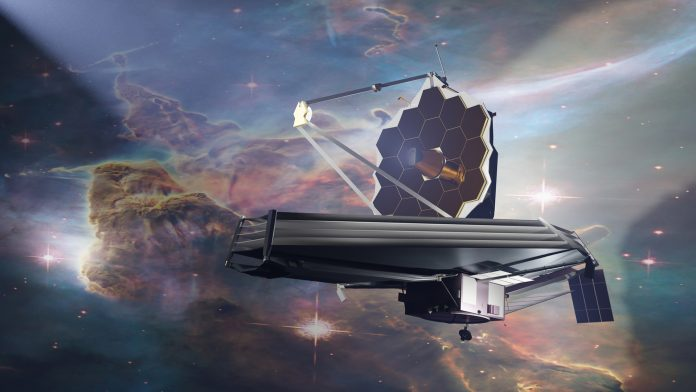
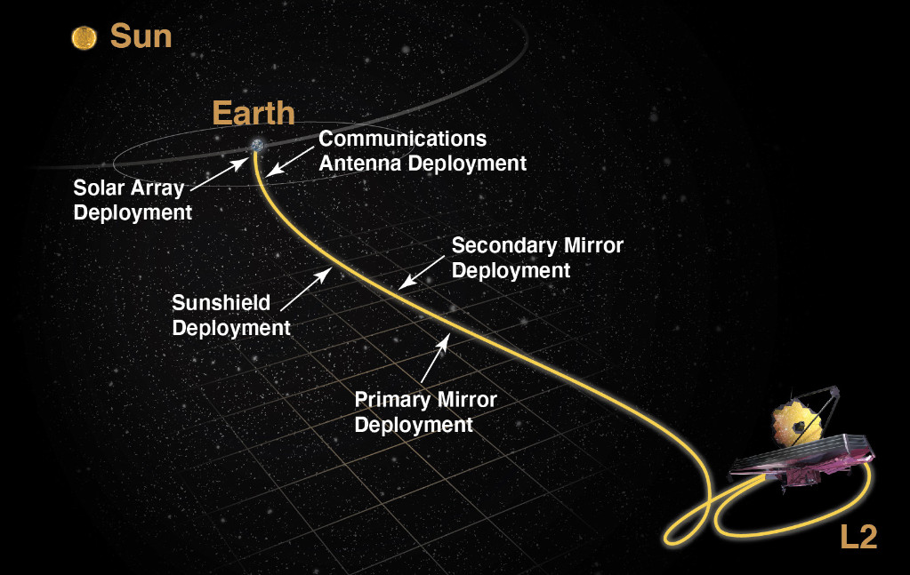

Jamess Webb
Vesoljski teleskop Jamesa Webba je vesoljski teleskop, ki ga je razvila NASA s prispevki Evropske vesoljske agencije in Kanadske vesoljske agencije. Teleskop je dobil ime po Jamesu E. Webbu, ki je od 1961 do 1968 vodil agencijo NASA in je imel osrednjo vlogo v programu Apollo. JWST naj bi nasledil Vesoljski teleskop Hubble kot naslednji vodilni projekt v astrofiziki. JWST je bil lansiran 25. decembra 2021 s poletom Ariane VA256. Teleskop je zasnovan tako, da v primerjavi s Hubblom zagotavlja izboljšano infrardečo ločljivost in večjo občutljivost za opazovanje predmetov, ki so do 100-krat šibkejši; omogočil naj bi širok spekter preiskav na področjih astronomije in kozmologije, tako opazovanje do rdečega premika nekaterih najstarejših, najbolj oddaljenih dogodkov in predmetov v vesolju, kot so prve zvezde in oblikovanje prvih galaksij, in pa podrobno atmosfersko karakterizacijo eksoplanetov, ki bi bili zanimivi za naselitev.

Razvoj
Za razvoj teleskopa je bil odgovoren Nasin center v Marylandu (Goddard Space Flight Center, GSFC), trenutno pa teleskop upravlja Znanstveni inštitut za vesoljske teleskope. Podjetje Northrop Grumman je bilo odgovorno za izgradnjo teleskopa.
Razvoj se je s proračunom v vrednosti 500 milijonov USD začel leta 1996 za začetek delovanja, ki je bil sprva načrtovan za leto 2007.Gradnja je bila končana pozno leta 2016, nato se je začela obsežna faza testiranja.
Izstrelitev
JWST so izstrelili 12:20 UTC 25. decembra 2021 z nosilno raketo Ariane 5 iz vesolskega centra Kourou v Francoski Gvajani, satelit se je od matičnega plovila odcepil 27 minut kasneje. Izstrelitev je NASA opisala kot »brezhibno« in »popolno«. 8. januarja 2022 je bil teleskop v celoti in uspešno konfiguriran v svojo operativno konfiguracijo, 11. februarja pa je dosegel svoj končni cilj, ko je posnel prve fotografije.
Lastnosti
Vesoljski teleskop Jamesa Webba je za pol lažji od vesoljskega teleskopa Hubble, vendar pa je Webbovo primarno ogledalo; ki je iz berilija, prevlečeno z zlatom, sestavljeno iz 18 šesterokotnih ogledal, premera 6.5 m; več kot šestkrat večje od Hubblovega 24 m (79 ft). Od tega 09 m2 (97 sq ft) pokrivajo podpore za sekundarno ogledalo, tako da je njegova dejanska površina zbiranja svetlobe približno 5,6-krat večja od Hubblovih 4.525 m2 (48.710 sq ft). Berilij je zelo toga, trda, lahka in nemagnetna kovina, ki se pogosto uporablja v letalstvu in natančno ohranja svojo obliko tudi v ultra hladnem okolju. Zlata prevleka zagotavlja infrardečo odbojnost in vzdržljivost.
Spekter
JWST je zasnovan predvsem za bližnjo infrardečo astronomijo, lahko pa vidi tudi oranžno in rdeče vidno sevanje ter (odvisno od instrumenta) srednje infrardečo območje. Zazna lahko zazna do 100-krat šibkejše predmete kot Hubble in telesa iz veliko bolj zgodnje zgodovine vesolja, iz časa rdečega premika (približno 180 milijonov let po velikem poku). Za primerjavo, najzgodnejše zvezde naj bi nastale med in (100-180 milijonov let kozmičnega časa),prve galaksije pa morda okoli rdečega premika (približno 270 milijonov let kozmičnega časa). Hubble ni zmožen videti dlje kot do zelo zgodnje ponovne ionizacije pri približno ,1 (galaksija GN-z11, kozmični čas 400 milijonov let).
Zasnova se osredotoča na bližnje do srednje infrardeče območje svetlobe iz treh glavnih razlogov:
predmeti z velikim rdečim premikom (zelo stari in oddaljeni) imajo vidne emisije, ki so premaknjene v infrardeče območje, zato jih danes lahko opazujemo le s pomočjo infrardeče astronomije;
hladnejši predmeti, kot so diski naplavin in planeti, najmočneje oddajajo v infrardeči svetlobi;
JWST lahko opazuje tudi telesa v bližini, recimo v našem osončju, ki imajo navidezno kotno hitrost 0,030 ločnih sekund na sekundo ali manj. To so med drugim planeti in sateliti, kometi in asteroidi izven Zemljine orbite ter »skoraj vsa« znana telesa v Kuiperjevem pasu. Poleg tega lahko opazi sprotne, nenačrtovane cilje v 48 urah po odločitvi za opazovanje, kot so supernove in izbruhe gama žarkov.
Pot
JWST bo deloval v halo orbiti in krožil okoli točke v vesolju, znane kot Lagrangeova točka Sonce-Zemlja L2, približno 1.500.000 km izven Zemljine orbite okoli Sonca. Njegov dejanski položaj se bo med kroženjem gibal med približno 250.000 km in 832.000 km od L2, tako da bo izven Zemljine in Lunine sence. Za primerjavo, Hubble kroži 550 km nad zemeljsko površino, Luna pa je približno 400.000 km od Zemlje. Objekti v bližini te točke L2 Sonce-Zemlja lahko krožijo okoli Sonca sinhrono z Zemljo, kar omogoča teleskopu, da ostane na približno stalni razdalji z neprekinjeno orientacijo svojega edinstvenega ščitnika opreme pred Soncem, Zemljo in Luno. Skupaj s svojo široko orbito, ki se izogiba sencam, lahko teleskop hkrati blokira toploto in svetlobo vseh treh teles ter se izogne tudi najmanjšim temperaturnim spremembam senc Zemlje in Lune, hkrati pa ohranja neprekinjeno napajanje s sončno energijo in komunikacijo z Zemljo z proti Soncu obrnjeni strani. Tako bo vesoljsko plovilo ostalo na konstantni temperaturi pod 50 K (–223 °C), ki je potrebna za šibka infrardeča opazovanja.
